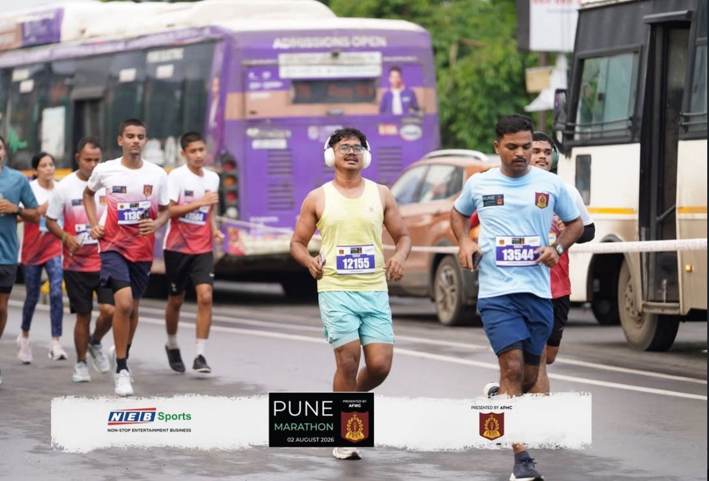

Athletics
Personal bests across distance running and strength training.

Running personal bests
- 5K
- 22:34
- 10K
- 54:07
- Half marathon (21K)
- 1:57
Strength personal bests
- Squat
- 125 kg
- Deadlift
- 140 kg
- Bench Press
- 80 kg
Personal bests across distance running and strength training.
